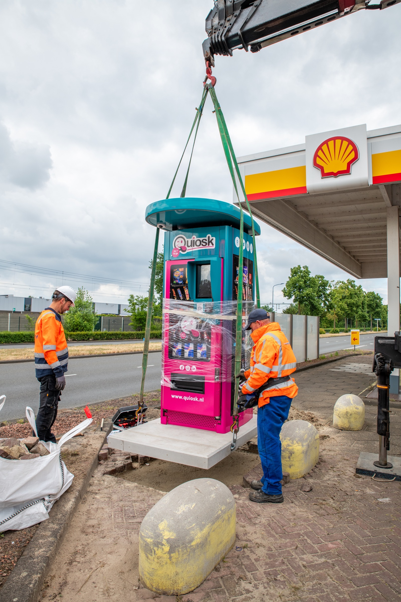
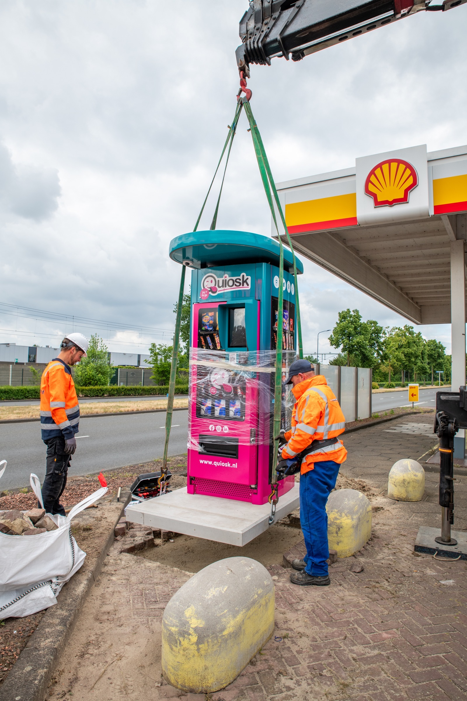

Stap 1
Locatie selectie
We selecteren samen een strategische locatie met hoge doorloop en goede bereikbaarheid voor maximaal resultaat.
Quiosk is dé Nederlandse expert in outdoor onbemande retail. Wij plaatsen en exploiteren moderne 24/7 self service vending machines op locaties met structurele bezoekersstromen, zoals tankstations, wasstraten, laadpleinen, P+R-terreinen en wooncomplexen. Onze Quiosk’en spelen in op directe koopbehoefte: gemak, snelheid en altijd beschikbaar.
Wij investeren volledig in de Quiosk, installatie, techniek en exploitatie. Als partner stel je enkel een geschikte locatie beschikbaar. In ruil daarvoor ontvang je een maandelijkse omzetvergoeding zonder investering en zonder operationele inspanning.
Van assortiment en realtime monitoring tot bevoorrading, onderhoud en klantenservice verzorgt Quiosk het complete beheer. Zo maken we van ongebruikte ruimte een structurele, zorgeloze inkomstenbron met maximale service voor jouw bezoekers.
 Zo werkt het
Zo werkt het
Stap 1
Locatie selectie
We selecteren samen een strategische locatie met hoge doorloop en goede bereikbaarheid voor maximaal resultaat.
Stap 2
Wij doen de investering
Quiosk investeert in de machine, installatie, bevoorrading en exploitatie. U kunt starten zonder eigen investering.
Stap 3
Installatie & configuratie
Wij verzorgen de plaatsing, sluiten aan op 220v, regelen internetverbinding en configureren assortiment + digitaal betalingssysteem.
Stap 4
Voorraadbeheer & onderhoud
Na plaatsing verzorgen wij voorraadaanvulling en onderhoud. Monitoring detecteert direct storingen en afwijkingen.
Stap 5
Klantenservice 24/7
Onze support is dag en nacht beschikbaar, zodat uw bezoekers altijd kunnen rekenen op snelle service.


 

Waarom een Quiosk
Onze automaten zijn 24 uur per dag open. Bezoekers kunnen altijd terecht voor iets lekkers.
Een ruim aanbod met bekende A-merken. Snacks en drankjes direct binnen handbereik.
Moderne automaten met contactloos betalen. Snel, veilig en makkelijk in gebruik.
Kwalitatieve machines met continue controle op afstand. Wij zorgen voor bijvullen, onderhoud en ondersteuning.
Quiosk plaatst en beheert de automaat. U hoeft niets te investeren.
U ontvangt een eerlijke vergoeding per verkoop. Een mooie extra opbrengst voor uw locatie.
Locatietypes
Langs drukke wegen met veel voorbijrijdend verkeer. Perfect voor een snelle snack of drankje onderweg.
Bezoekers wachten terwijl hun auto wordt gewassen. Ideaal moment voor iets lekkers uit de automaat.
Mensen wachten terwijl hun auto oplaadt. Tijd voor een snack of frisse drank.
Drukke P+R en parkeergarages met veel bezoekers. Altijd iets lekkers binnen handbereik.
Voor bewoners en bezoekers, dag en nacht. Handige snacks en drankjes dichtbij huis.
Drukke stations en overstappunten. Snel iets meenemen voor onderweg.
Onze referenties
"Sinds de plaatsing merken we direct extra gemak voor bezoekers en een stabiele extra omzet."

"Quiosk schakelt snel, communiceert helder en ontzorgt ons volledig in dagelijks beheer."
"De combinatie van 24/7 beschikbaarheid en contactloos betalen sluit perfect aan op onze locatie."
Voor de meeste locaties zijn er geen investeringskosten. Quiosk investeert in de machine, installatie, bevoorrading en exploitatie. Afhankelijk van het type samenwerking werken we met omzetdeling, een vaste vergoeding of een combinatie daarvan.
U ontvangt een vergoeding op basis van het afgesproken model:
Tijdens de locatieanalyse ontvangt u een duidelijke opbrengstindicatie.
De benodigde ruimte hangt af van het type kiosk (enkel, duo of indoor-opstelling). In de meeste gevallen is een vrije vloeroppervlakte van circa 1-2 m² voldoende. We kijken altijd naar zichtbaarheid, looproutes en toegankelijkheid.
Wij analyseren onder andere:
Op basis daarvan maken wij een onderbouwde prognose.
Quiosk verzorgt de volledige bevoorrading. Dankzij realtime monitoring weten wij precies wanneer bijvullen nodig is. Zo beperken we misgrijpen én onnodige servicemomenten.
Quiosk is volledig verantwoordelijk voor:
U heeft hier geen omkijken naar.
Onze kiosken zijn robuust en beveiligd. In geval van schade of vandalisme nemen wij de afhandeling op ons, conform de gemaakte afspraken. Dit wordt vooraf contractueel vastgelegd.
Wij werken doorgaans met meerjarige overeenkomsten om rendement voor beide partijen te waarborgen. De exacte looptijd stemmen we samen af.
Ja. Wij stemmen het assortiment af op de doelgroep en locatie. Op basis van verkoopdata optimaliseren we continu het aanbod.
Na akkoord kan plaatsing doorgaans binnen enkele weken plaatsvinden, afhankelijk van locatievoorbereiding en eventuele aansluitingen.
Wij monitoren continu prestaties. Indien nodig optimaliseren we:
Ons model is gericht op langdurig gezamenlijk rendement.
Ja, een standaard stroomaansluiting is vereist. Quiosk regelt internet via een eigen 4G-router.
Ontdek wat Quiosk voor uw locatie kan betekenen.
Vraag vandaag nog een locatiecheck aan.
Plan mijn gratis locatiecheck